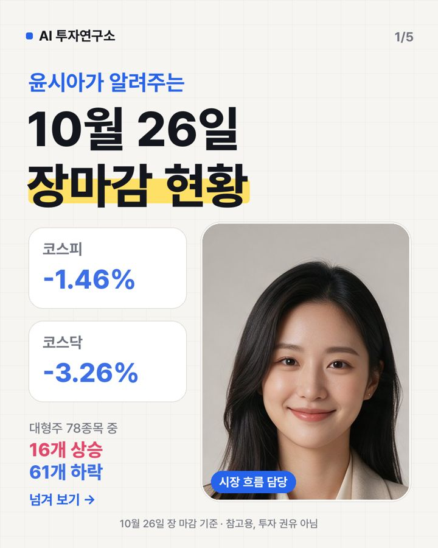

10월 26일 장마감 요약 — 코스피 -1.46%, 코스닥 -3.26%
2026-10-26 장 마감 기준 · 진행 윤시아 (시장 흐름)

오늘 코스피는 5,469.47로 -1.46%, 코스닥은 727.21로 -3.26% 마감했어요. 대형주 78종목 중 16개가 오르고 61개가 내렸어요. 원/달러 환율은 1,326원이에요.
지수 흐름
| 종가 | 하루 | 1주 | 1달 | |
|---|---|---|---|---|
| 코스피 | 5,469.47 | -1.46% | -5.18% | -22.06% |
| 코스닥 | 727.21 | -3.26% | -10.10% | -12.84% |
많이 오른 종목
- JYP Ent. +14.11% · 42,050원
호재일본 투자그룹의 대규모 지분 매수 루머가 주가를 끌어올렸어요 - 삼성물산 +2.80% · 294,000원
호재창원·군포 대형 재건축 수주로 매출 기대감이 커졌어요 - 삼성생명 +2.47% · 249,000원
호재삼성생명이 연금 라운지를 새단장하고 퇴직연금 선두 유지로 자산관리 경쟁력을 높였어요. - SK하이닉스 +2.14% · 1,290,000원
호재시장 기대대로 대규모 주주환원 기대감이 상승했어요 - SK +2.07% · 469,500원
호재SK하이닉스가 16조원 규모 특별배당을 검토해 주주환원이 늘어날 전망이에요
많이 내린 종목
- LIG디펜스앤에어로스페이스 -8.70% · 425,000원
악재뇌물 혐의와 입찰 제한으로 방산 사업 차질 우려 - 한화솔루션 -6.87% · 26,450원
뉴스관련 기사: 한화큐셀 탠덤 연구실 3곳, 정부 ‘안전 우수’ 인증 (부산일보) - 삼천당제약 -5.91% · 186,300원
뉴스관련 기사: 코스피 5500선 깨져 '6개월' 최저…유가 급등·슈퍼위크 경계감[시황종... (뉴스1) - HLB -5.41% · 39,350원
뉴스관련 기사: 코스피 5500선 깨져 '6개월' 최저…유가 급등·슈퍼위크 경계감[시황종... (뉴스1) - HD현대중공업 -4.77% · 289,500원
악재노사 갈등으로 파업 위험이 커져 주가가 하락했어요
누가 사고 팔았나 (순매수)
| 외국인 | 기관 | 개인 | |
|---|---|---|---|
| 코스피 | -6,827억 원 | +6,131억 원 | +331억 원 |
| 코스닥 | +442억 원 | -1,268억 원 | +801억 원 |
내일 체크 포인트
- 외국인 흐름 — 오늘 코스피에서 -6,827억 원 순매도
- 국제유가 — 최근 한 달 +10.02%
- 미국 10년 금리 4.97% · 공포지수 VIX 18.5
- 20일 이동평균선 위에 있는 대형주 12/78종목
이 글은 공개된 시세·수급 데이터와 그날 뉴스 제목을 정리한 참고 자료이며 투자 권유가 아닙니다. 시세는 거래소 종가 기준이고, 투자 판단과 결과의 책임은 본인에게 있습니다.